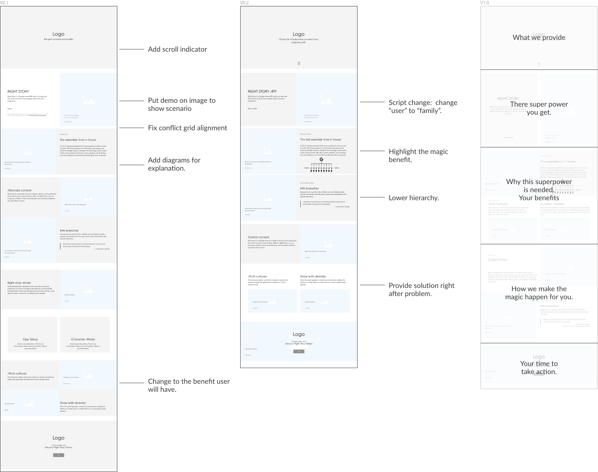
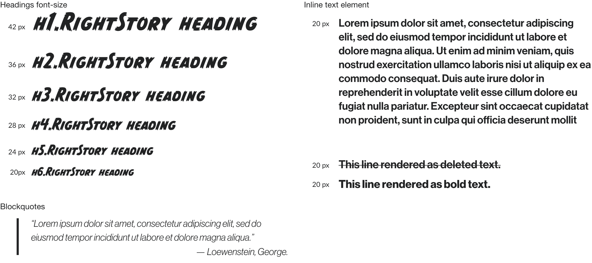
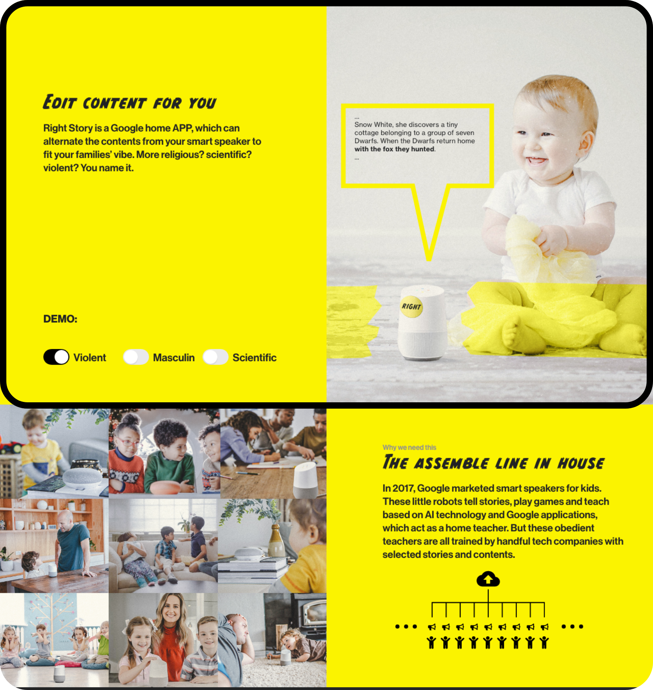
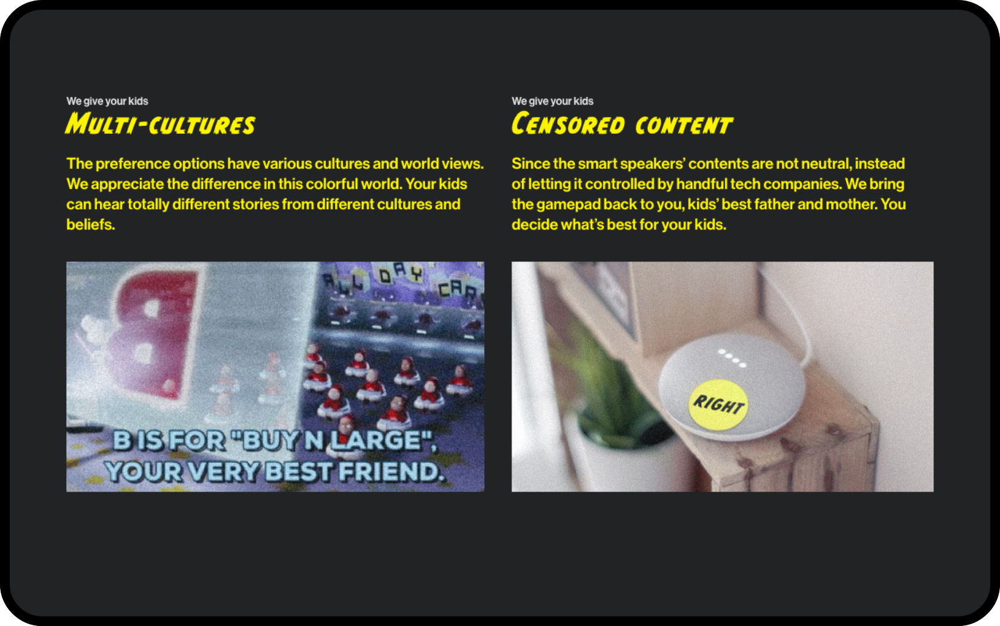
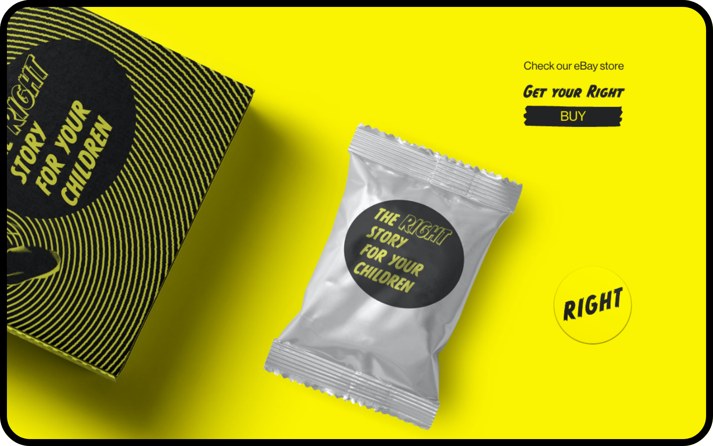

Right Story
What if we can shape a person’s mind like writing program.
We live in an era that ads service are so powerful and well-designed that can manipulate people mind. In the 2018 United States election, the Cambridge Analytic learnt the preference of specific groups of user from the information they bought from Facebook and target them with specific kind of news to manipulate their decision on election. Since then, we understand the seriousness of ads algorithm but we don’t know how to stop the train. It’s different from well-recognized manipulation, blocking information. We still see tailored advertisement for us posed up everyday on our Instagram, Facebook, among the posts from our friends. We allow the advertising service sending things we like because of convince, because of not mind, or because of free service. We don’t care about what this ads service would lead to since we are just customers, and we don’t lose anything costly, apparently. What we leave to ads service to deal with what we bring in control.
How might we can enable people to carefully decide what ad service is appropriate and what is problematic
How might we put user’s foot to the ads managers‘ shoes who work behind the ads algorithm so that people can think about ads service’s usage and its effects. To create this perspective, instead of managing ad service for themselves, role play in parents and kids instantly bring people into this decision making position.
Kid is a surrogate of user. Parents are the born manager for kids. They plan the future for their kids, use encouragement and rewards to nudge kids towards what parents think best for them or for family. “Eat that broccoli and I will reward you a sticker.””Do you want to know how Jesus was born?” In this role play, user have the authority and responsibility to manage another human’s mind.
We chose smart speaker as our product’s media. The smart speakers act as AI babysitter at home for kids and have recommending service with ads algorithm. In 2017, tech companies marketed smart speakers for kids. These little robots tell stories, play games and teach with AI technology and Google applications, which act as a friend and a home teacher. It looks like a Deja vu to the scenario in Wall-E, where kids are raised by AI and grow up with strong connection with branding. Smart speaker act as a living being at home, rather than a cold block with cold screen on it, which is especially lovable for kids.
Right Story company
The smart speakers act as AI babysitter for kids and have recommending service with ads algorithm. In 2017, tech companies marketed smart speakers for kids. These little robots tell stories, play games and teach with AI technology and Google applications, which act as a friend and a home teacher. It looks like a Deja vu to the scenario in Wall-E, where kids are raised by AI and grow up with strong connection with branding. Smart speaker act as a living being at home, rather than a cold block with cold screen on it, which is especially lovable for kids.
Suspension of disbelief
Letting kids living with AI is still a little too fictional to be believe even among the so many magical tech products. It is still a bit far in the near future. Even though tech companies builds the visions and scenarios of these AI devices in ads and campaigns, it’s not easy for people to imagine how different it will be.
To suspended audience’s disbelief, we use these factors:
• The quality of prop must be believable.
• The initial premise can be quite outrageous as long as the story maintains consistency within that premise.
• Human actions and emotion. Audiences are very unforgiving if they think a character is behaving in an unbelievable fashion.
Product landing website
To let people follow the product story, we built a landing page to invite audiences into the scenario. The base ground is that smart speakers are smart enough to tell stories, talk with kids, and take care of them. We need realistic imagine to portrait the scenarios, and these scenario can resonate with the audience. We design the landing page framework where we explained what is the background story, what the product do, how we customize speaker contents, why user need our service, how users are going to set kids preferences and narrating the story in each sections then sent out for qualitative user feedback.
Benefits first
We had our participants walk through the landing page, asking for their opinions on their experience along the way, and learnt what they remembered from the information on the page and which part raise the emotion and questions. Through this, we realized that participants prefers in the benefits of product rather than the product information and how to use the products. We realized the landing page to draw audiences’ attention is not about what we are, what we do, it is about what the superpower and the new life we will provide to users.
Framework iteration
Black and Yellow: In visual we decided to use striking color to draw attention, to point out these choices are doing serious influence on kids’ preference and future. Also bright color is attractive to kids. It’s a combination of playfulness and seriousness.
Tape is used in cover barcode and fix tools temporarily. It’s widely used in kids DIY. It’s a match for our product concept, fix speaker’s contents and kids mental model of world view.
CC Monster Mash is picked as our display typeface. It is a comic typefaces from Comicraft, widely used for Marvel and DC. Neue Haas Grotesk is picked as text typeface which is a modern version of Helvetica. Bright yellow and black as the brand color.
These props are used as the special effects in the product, invite audience to believe in the story.
Final design
Demo in context to explain the superpower in altering content from the kids story.
Benefits for kids and parenting. There are variety fully in controlled for parents easily select for their kids to build their understanding of the world.
Call to take action, it led to a setting page with various characteristic options, like religions, political tendency, regional culture, habit of words, etc, which let audience carefully think about what should be education and informed by this promoting service.
Some reflections
After went through this speculative design process, I like that design fiction shapes vague problem to tangible form unveil the complexities and richness of our life. Through bring the poignant concept into reality, I saw more complex situation and problems behind the topic.
Ads problem was not created by tech companies, media company already doing that for politics, commercials or culture. Social medias contribute to the distribution more specific and direct.
Listen to story is a critical way for us to understand world, no matter the stories come from news, from neighbors or from parents, most of the time we only has access to the
representations, which are inevitably edited and filtered. It’s hard for us to fly to another country to see what’s going on, or go back to the past to spectate the moment, or be critical before we know anything. The truth is far from our ability to reach.
Here, as a designer, I was designing a fiction, which is telling a story rather than a truth. Instead of being desperate about we are losing to ads algorithm and non-real fictions in the battle of shaping our mind, open mind for different possibility and looking for the stories that would help ourselves to get to the directions we want to be would be a better question to think about.